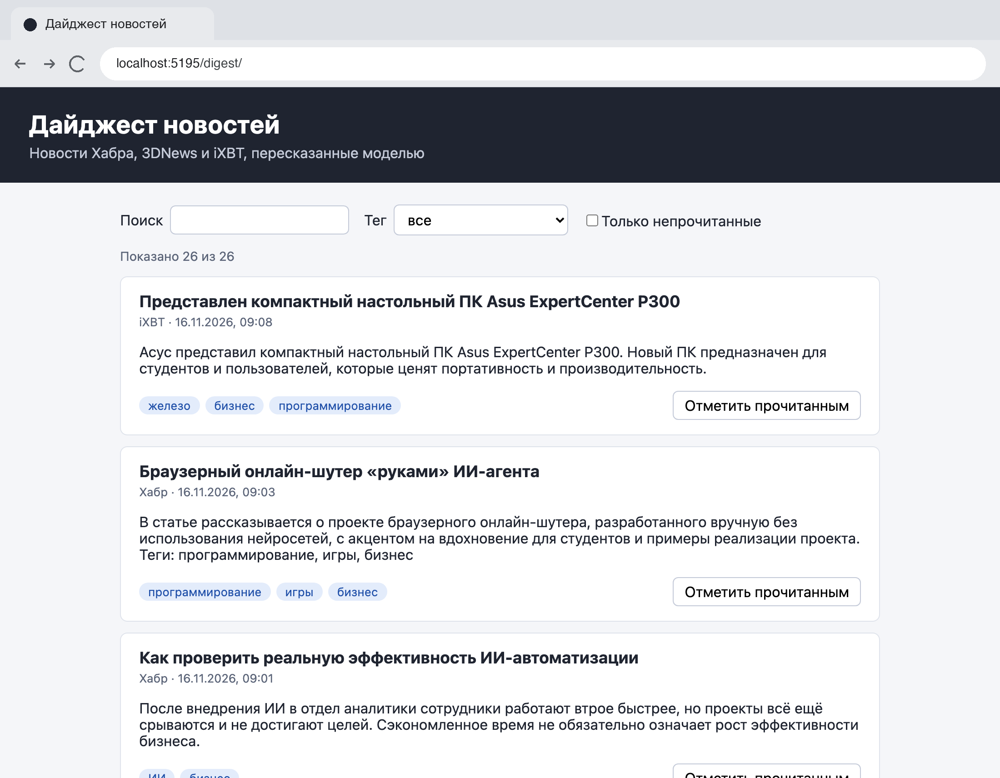
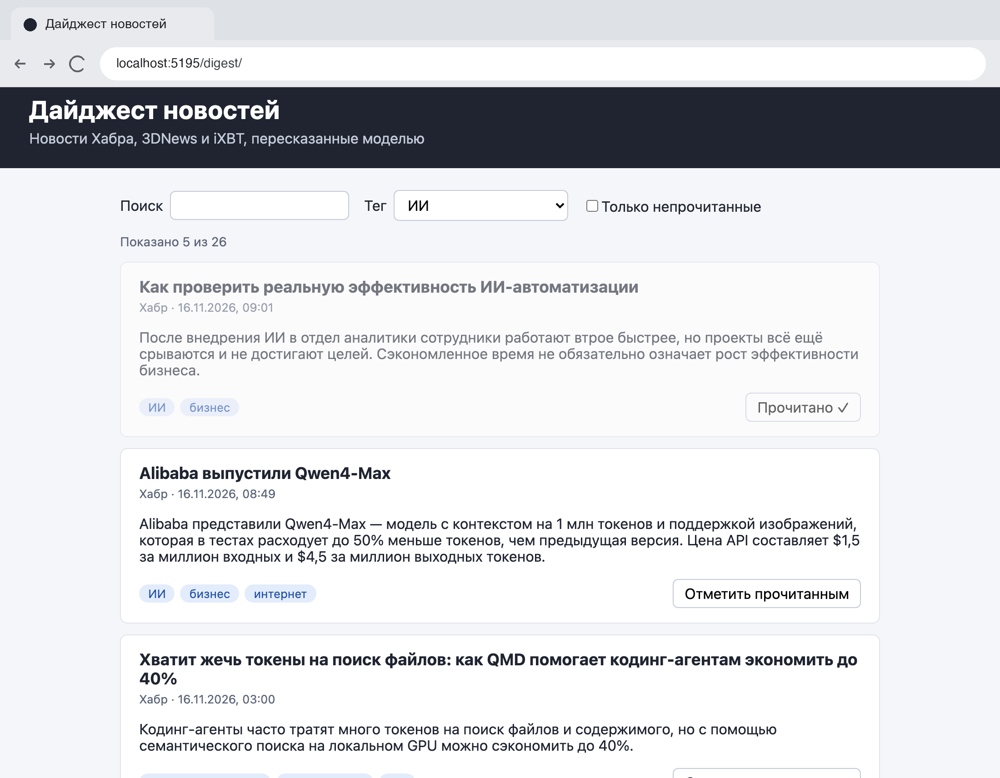

Справочник по Angular и React · модуль 4 · работа с ИИ-агентом и обзор Angular
П4
Проект: дайджест новостей
На этой странице — задание проекта модуля 4. После автоматизации модуля 4 новости каждое утро попадают в Google Таблицу, а вечером приходят в Telegram. В проекте к ним появляется страница: лента карточек с пересказами и тегами, поиск, фильтр по тегу и отметка «прочитано». Проект делается в режиме Р2: код пишет ИИ-агент, а вы ставите ему задачи, проверяете результат и решаете, принять его или нет. Ниже — требования, порядок работы, пример задания агенту, дополнительные задания и порядок защиты.
- Режим ИИ
- Р2 — код пишет агент, вы ставите задачи и принимаете работу (глава 0.5)
- Агент
- Любой, который умеет менять файлы проекта и запускать команды: облачный или Continue с Ollama из главы 4.3
- Основа
- Таблица, веб-приложение Apps Script и процессы n8n из автоматизации модуля 4; новый репозиторий
digest - Сдаётся
- Ссылки на репозиторий и сайт,
AGENTS.md, задания агенту, журналai-log.md, защита у преподавателя
§1Что уже есть и что нужно сделать
Автоматизация модуля 4 собирает и хранит новости. Страницы, которая их показывает, пока нет. В таблице — что есть после автоматизации и что добавляет проект.
| Что | После автоматизации | Проект модуля 4 | Глава |
|---|---|---|---|
| Новости | Каждое утро в таблице, пересказ и теги от модели | Без изменений; можно выбрать свои ленты и теги | А4 |
| Чтение данных | Адрес веб-приложения Apps Script отдаёт JSON | Страница загружает его при открытии | 2.3, А4 |
| Страница | Нет | Лента карточек, поиск, фильтр по тегу, «прочитано» | 1.5–1.7 |
| Тесты и доступность | — | Тесты по требованиям, проверка Lighthouse | 4.1, 4.2 |
| Кто пишет код | — | Агент по вашим заданиям; вы проверяете и принимаете | 4.3 |
| Публикация | — | GitHub Pages, линтер и тесты в конвейере | 3.3, 4.1, 4.2 |
Так выглядит пример решения на настоящих данных из таблицы. Над лентой — поиск, выбор тега и флажок «Только непрочитанные», под ними счётчик. У карточки — заголовок со ссылкой на новость, источник и время, пересказ, теги и кнопка «Отметить прочитанным».

Выбран тег «ИИ»: осталось 5 новостей из 26. Первая отмечена прочитанной — она бледнее, а на кнопке «Прочитано ✓». Отметка хранится в браузере и не пропадает после перезагрузки.

§2Обязательные требования
Работа принимается, если выполнены все пункты. Справа — глава, где разобран нужный механизм.
| Требование | Глава |
|---|---|
Проект digest на Vite, React и TypeScript; адрес веб-приложения задаётся переменной VITE_DIGEST_URL в файле .env; строкой в коде его нет | 1.1, А4 |
| Карточка новости: заголовок — ссылка на новость в новой вкладке, источник, дата и время, пересказ, теги отдельными метками | 1.5 |
| Новости идут от свежих к старым | 1.5 |
| Поиск по заголовку и пересказу без учёта регистра; выбор одного тега; флажок «Только непрочитанные»; всё работает вместе. Отфильтрованный список вычисляется при отрисовке и в состоянии не хранится | 1.5, 1.6, 4.3 |
Отметка «прочитано» снимается повторным нажатием и сохраняется в localStorage после перезагрузки | 1.7 |
Пока данные загружаются — сообщение с ролью status; если не загрузились — сообщение с кодом ответа и ролью alert; если ничего не найдено — «Новостей не найдено» | 2.3, 4.2 |
| Не меньше пяти тестов по требованиям: поиск, тег, «прочитано» после перезагрузки, ошибка загрузки, порядок новостей. Сеть в тестах подменена | 4.1 |
| Lighthouse по доступности — 100; у полей подписи, всё работает с клавиатуры | 4.2 |
В корне репозитория AGENTS.md с правилами проекта | 4.3 |
Не меньше трёх заданий агенту с разделом «Готово, когда»; каждое лежит в папке tasks и записано в журнал вместе с решением | 4.3, 0.5 |
Сайт опубликован на GitHub Pages; в конвейере перед сборкой — линтер с --deny-warnings и тесты | 3.3, 4.1, 4.2 |
| Процессы n8n из автоматизации работают: утром новости в таблице, вечером сообщение в Telegram | А4 |
Адрес веб-приложения можно хранить в репозитории: он и так виден каждому, кто откроет сайт. Ключ записи в репозиторий, в код и в журнал не попадает — он нужен только n8n.
§3Порядок работы
РазбираемсяЦикл на каждое задание
Проект делится на несколько заданий агенту, и каждое проходит цикл из главы 0.5: постановка, код, автоматическая проверка, чтение, решение. В главе 4.3 маленькая модель не справилась с задачей целиком, и её пришлось делить на шаги. Делите задачи так же: одно задание — одна часть страницы.
Одно задание агенту
Принятая работа коммитится; следующая задача начинается с чистого состояния.
На схеме один оборот. Задание лежит файлом в папке tasks: так его видно в репозитории и на защите. Агент меняет файлы, затем вы сами запускаете проверки и читаете изменения в Source Control. Принятую работу коммитите — тогда следующее задание агента видно отдельным изменением, а неудачное легко отменить командой git checkout -- ..
ДелаемДайджест по заданиям
- Создайте проект и репозиторий
Это сделайте сами, как в главе 1.1:
npm create vite@latest digest -- --template react-ts, затем репозиторийdigestна GitHub. Поставьте и настройте Vitest и Testing Library, как в главе 4.1. В.envзапишитеVITE_DIGEST_URL=и адрес веб-приложения из автоматизации. - Напишите AGENTS.md
По образцу главы 4.3: версии, команды проверки, правила кода. Для этого проекта добавьте формат данных: что возвращает адрес веб-приложения и что теги приходят строкой «ИИ, наука». Без этого агент придумает формат сам.
- Задание 1: загрузка и карточки
Пример задания — ниже. Отдайте его агенту, затем проверьте результат командами и чтением.
digest/tasks/01-zagruzka.md Задание 1. Загрузка дайджеста и карточки новостей (React 19, TypeScript, Vite). Что сделать: - src/digest.ts — функция loadDigest(url): загружает JSON {"news": [...]} с адреса import.meta.env.VITE_DIGEST_URL; теги приходят строкой «ИИ, наука» — функция превращает их в массив строк; новости сортируются от свежих к старым по полю date; - если ответ не ok — ошибка с текстом «Дайджест не загрузился: код N.»; - App.tsx показывает новости карточками: заголовок — ссылка на link в новой вкладке, источник и дата со временем, пересказ summary, теги отдельными метками. Правила проекта: - данные загружаются в useEffect один раз; состояния: список, загрузка, ошибка; - пока идёт загрузка — <p role="status">Загрузка дайджеста…</p>; при ошибке — <p role="alert"> с текстом ошибки; - поиска, фильтров и отметки «прочитано» в этом задании нет. Готово, когда: - npx tsc -b и npm run lint -- --deny-warnings — без ошибок; - CI=true npm test проходит, в src/App.test.tsx два новых теста с подменённым fetch: карточки в порядке от свежих к старым и сообщение «Дайджест не загрузился: код 500.»; - npm run dev показывает новости из таблицы.Раздел «Готово, когда» проверяется за минуту: три команды и одна страница в браузере. Если агент сообщил «готово», а команды падают, — работа не принята, замечания и решение записываются в журнал.
- Задание 2: поиск, тег и «только непрочитанные»
Напишите задание сами по образцу первого. Укажите, что отфильтрованный список вычисляется, и перечислите тесты, которые должен добавить агент.
- Задание 3: отметка «прочитано»
То же: требования, правила и «Готово, когда». Отдельно оговорите, что хранится в
localStorageи под каким ключом. - Доступность и публикация
Запустите Lighthouse (глава 4.2) и пройдите страницу клавишей Tab. Найденное — новое задание агенту или правка руками с записью в журнал. Затем добавьте
deploy.ymlс линтером и тестами и опубликуйте сайт.
Код страницы в проекте пишет агент по вашим заданиям, а оценивается в первую очередь то, как вы ставите задачи и проверяете результат. Все механизмы — загрузка с состояниями, фильтры, localStorage, тесты с подменой сети, доступность — разобраны в главах 1.5–1.7, 2.3, 4.1 и 4.2.
§4Дополнительные задания
Задания выполняются по выбору; сколько их нужно для какой оценки, сообщает преподаватель. Каждое — тоже задание агенту с записью в журнал.
| Задание | Что получится | Подсказка |
|---|---|---|
| Свои ленты | Дайджест по теме вашей специальности | Адреса лент — в узле «Ленты», названия источников — в «Свежих новостях», список тегов — в «Модели» и «Проверке ответа» |
| По дням | Заголовки «Сегодня», «Вчера», «15 ноября» над группами карточек | Группировка по date.slice(0, 10); часовой пояс — toLocaleDateString('ru') |
| Фильтры в адресе | Ссылка вида ?tag=наука&q=марс открывает ленту с теми же фильтрами | Хук useSearchParams из react-router вместо useState — параметры после ? читаются так же, как useParams из главы 3.1 читает части пути |
| Вечером — только мои теги | В Telegram приходят новости только с выбранными тегами | Фильтр в узле «Текст сообщения» процесса «Вечером в Telegram» |
| Тот же дайджест на Angular | Лента на Angular с тем же адресом данных | Глава 4.4: служба с httpResource, сигналы и computed |
§5Работа с ИИ
Проект выполняется в режиме Р2: код пишет агент. Какой агент взять, решаете вы. Подойдёт любой, который сам меняет файлы проекта и запускает команды. Это может быть облачный агент — GitHub Copilot в режиме агента, Cursor, Claude Code и другие — или локальный: Continue с Ollama из главы 4.3. У каждого варианта свои недостатки, они разобраны в главе 4.3, §9.
С локальной моделью qwen3:4b-instruct агент в опытах главы 4.3 не довёл ни одной задачи до рабочего кода. С ней проект тоже можно сдать: оцениваются постановка задач, проверка и решения, сколько бы кода ни написал агент. Если агент не справился, напишите код сами и запишите в журнал, что было отклонено и почему.
Общие правила из главы 0.5 остаются в силе. Любую строку сданного кода вы объясняете на защите. Ключ записи и токен бота не передаются агенту и не попадают в код и журнал.
§6Сдача и защита
- Что прислать
Ссылки на репозиторий
digestи опубликованный сайт. В репозитории —AGENTS.md, папкаtasksс заданиями агенту иai-log.md. - Что показать на защите
Сайт с настоящими новостями из таблицы; прохождение страницы с клавиатуры; запуск тестов; процесс n8n и сообщение в Telegram.
- Что спросит преподаватель
Покажет на строку кода и спросит, что она делает. Откроет задание из
tasksи спросит, как вы проверили каждый пункт «Готово, когда». Попросит показать в журнале принятую или отклонённую правку агента и объяснить решение.